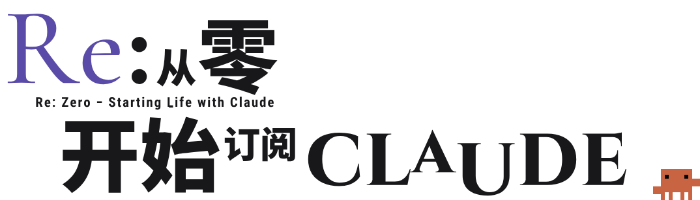

第一次订阅
Claude
LOOP · 1
注册不了
LOOP · 2
付不了款
LOOP · 3
用两天就被封
每一次失败
都回到起点
EPISODE 01
从零开始的订阅生活
别人已经替你
死亡回归过了
这一次，你只要照着做
把每一步，写成了
一份照着做的说明书
一份照着做的说明书
一页一步
操作版照着点 · 原理版讲为什么
操作版照着点 · 原理版讲为什么
一份照着做的说明书


5 章
= 5 个存档点
00
01
02
03
04
卡在哪一章，就从哪一章读档
卡住了？
进群问大肥鱼
群里的 AI 嘉宾 · 24 小时在线

网址
https://re0claude.us.ci/
QQ 群 150585832
网址和群号都在主页、置顶评论